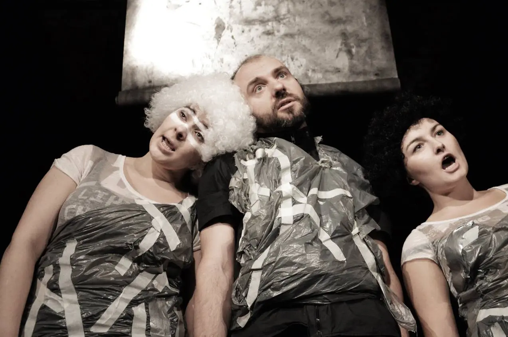

About us Our group
Theater Proscenium is a non-institutional, professional alternative theater in Cracow in Poland. It was founded in on the initiative of Ziuta Zającówna— associate professor of AST National Academy of Theatre Arts, actress, and director of performances.
